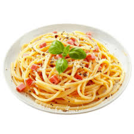

This classic Italian pasta dish is a quick, 10-20 minute meal featuring spaghetti coated in a velvety sauce made from eggs, hard cheese (Parmesan/Pecorino), crispy pork (guanciale or bacon), and black pepper. It relies on pasta water and cheese to emulsify the eggs, forming a creamy sauce without using heavy cream.
A classic, simple carbonara is a 5-ingredient Italian pasta dish relying on eggs, hard cheese, cured pork, and black pepper to create a creamy sauce without actual cream. It uses hot, starchy pasta water to emulsify the eggs and cheese, resulting in a velvety, luxurious coating.